RadioÐoge
Bridging the Gap to Financial Inclusion.
Such Learn! Complete guide to installing, using, and developing with RadioDoge. Much education for developers of all ages!
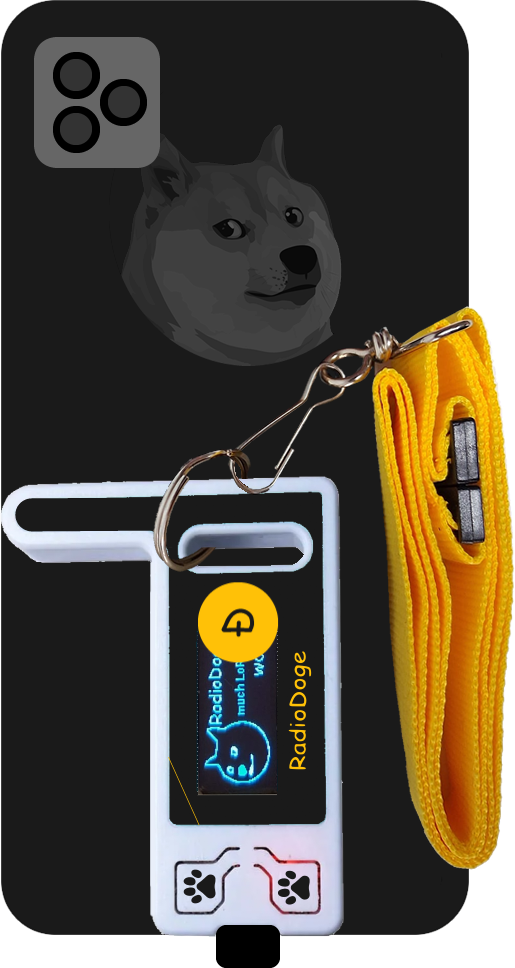
Getting Started
What is RadioDoge?
RadioDoge is a decentralized communication and data transmission network that enables Dogecoin transactions over radio waves, bypassing the need for traditional internet access. It uses long-distance RF protocols such as LoRa and VaraHF to provide reliable and resilient secure data transmission to reach the Dogecoin blockchain.
RadioDoge empowers the unbanked and those in remote areas to access blockchain-based financial services, engage in transactions with neighbors and the world at large, and maintain self-control and self-governance over their finances.
RadioDoge Bridging the Gap to Financial Inclusion
The RadioDoge project is committed to advancing financial inclusion for the 1.7 billion unbanked people in the world, offering decentralized and resilient communication even in remote regions.
The system utilizes long distance RF protocols such as LoRa and VaraHF to provide reliable and resilient secure data transmission, bypassing the need for traditional internet access in order to reach the Dogecoin blockchain.
RadioDoge has been built to empower the unbanked, some of the most isolated and vulnerable to exploitation, to access blockchain-based financial services, engage in transactions with both neighbors and the world at large, and allows for self control and self governance over their finances without having to depend on middle-men who often abuse their vulnerability.
RadioDoge's adaptable network topology ensures inclusivity for individuals in diverse locations, with minimal infrastructure cost. Notably, being low-power (both compute and bandwidth), it is easily enabled with renewable energy sources like solar panels, small wind turbines, and batteries, making it suitable for places were hardwired electrical and communications infrastructure are scarce. This combination of financial inclusion and eco-friendliness makes Radio Doge a powerful tool for improving the lives of people everywhere. Dogecoin, for all humanity.
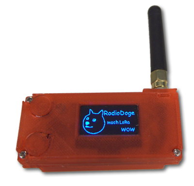
Installation Guide
Firmware Versions
RadioDoge has two firmware versions available:
- Firmware V1: Original firmware with basic LoRa mesh networking capabilities
- Firmware V3: Advanced firmware with web interface, wallet management, and enhanced features
Choose the version that best fits your needs. V3 is recommended for most users as it includes a built-in web interface and more features.
Firmware V1 Installation
Firmware V1 is the original RadioDoge firmware with basic LoRa mesh networking capabilities. It's simpler and lighter than V3, suitable for basic node operations.
Hardware Requirements for V1
| Component | Description | Where to Buy |
|---|---|---|
| Heltec LoRa32 v2 or v3 | ESP32 + LoRa development board with OLED display | Heltec Official, Amazon, AliExpress |
| LoRa Antenna | 915MHz (US) or 868MHz (EU) LoRa antenna with SMA connector | Amazon, DigiKey |
| USB Cable | USB-A to Micro-USB cable | Included with most boards |
How V1 Works
Firmware V1 provides basic LoRa mesh networking functionality:
- LoRa Communication: Sends and receives data over LoRa radio waves
- Mesh Networking: Forms a mesh network with other RadioDoge nodes
- OLED Display: Shows node status and basic information on the built-in OLED screen
- Serial Interface: Configuration and monitoring via serial connection
- Basic Transaction Relay: Relays Dogecoin transactions through the mesh network
V1 Installation Steps
Follow these steps to install Firmware V1 on your Heltec device:
Step 1: Prerequisites
Install Arduino IDE and ESP32 board support (see V3 installation guide for detailed steps).
Step 2: Clone Repository
git clone https://github.com/dogecoinfoundation/radiodoge.git
cd radiodoge
git checkout 0.0.1-Beta-1
cd heltec-firmwareStep 3: Install Required Libraries
In Arduino IDE, install these libraries via Tools > Manage Libraries:
- RadioHead by Mike McCauley
- U8g2 by olikraus (for OLED display)
Step 4: Configure and Upload
- Open the firmware sketch from
heltec-firmwarefolder - Select board:
Tools > Board > ESP32 Arduino > Heltec WiFi LoRa 32 - Select your COM port
- Configure node address and hub address in the code
- Upload the firmware
Step 5: Using V1
After installation, V1 firmware operates via:
- OLED Display: Shows node status, address, and connection info
- Serial Monitor: Connect at 115200 baud to view logs and send commands
- LoRa Radio: Automatically connects to nearby hubs and relays transactions
Firmware V3 Installation
Firmware V3 is the advanced version with a built-in web interface, wallet management, and enhanced features. It's recommended for most users.
Hardware Requirements for V3
| Component | Description | Where to Buy |
|---|---|---|
| Heltec LoRa32 v3 | ESP32 + LoRa development board with OLED display (V3 recommended) | Heltec Official, Amazon, AliExpress |
| LoRa Antenna | 915MHz (US) or 868MHz (EU) LoRa antenna with SMA connector | Amazon, DigiKey, Mouser |
| USB Cable | USB-A to Micro-USB or USB-C cable (depending on board version) | Any electronics store, Amazon, included with most boards |
| Power Supply (Optional) | 5V USB power adapter or battery pack for portable use | Amazon, electronics stores |
| Enclosure (Optional) | Weatherproof enclosure for outdoor deployment | Amazon, electronics stores |
Recommended Hardware Models
- Heltec WiFi LoRa 32 (V3): Model HTIT-WB32LA - Most common and well-supported
- Heltec WiFi LoRa 32 (V2): Older version, still compatible
Antenna Specifications
- Frequency: 915MHz (North America, South America, Australia) or 868MHz (Europe)
- Connector: SMA or IPEX connector (check your board model)
- Gain: 2-3 dBi recommended for most applications
- Type: Whip antenna or external directional antenna for longer range
How V3 Works
Firmware V3 is the advanced version with a comprehensive feature set including blockchain-like mesh networking, secure cold storage, and internet connectivity. Here are the key features:
Blockchain-Like Mesh Network
RadioDoge V3 creates a decentralized mesh network that works like a blockchain for Dogecoin transactions:
- Broadcast Transaction: Send your Dogecoin transaction to all RadioDoge devices in range
- Mesh Propagation: Each device rebroadcasts to extend the network reach
- Gateway Discovery: The transaction travels until it finds a device with internet connectivity
- Blockchain Integration: The gateway device forwards your transaction to the Dogecoin network
- Response Relay: The detailed response travels back through the mesh to you
This creates a truly decentralized way to send Dogecoin transactions without requiring internet on your device!
Core Features
- Built-in Web Interface: Access device via web browser at http://192.168.4.1
- WiFi Access Point: Creates its own WiFi network (default password: radiodoge)
- Dual WiFi Mode: Access Point + Station mode for internet connectivity
- Persistent Configuration: All settings stored in NVS flash memory
- Real-Time Logging: Monitor all system activity with live log viewer
- OLED Display: Shows status information and menu navigation
- Moon Phase Display: View current moon phase on the OLED display with beautiful graphics
- LibDogecoin Integration: Full libdogecoin WASM support for secure wallet generation and transaction signing
- Custom Partition Table: Optimized partition layout for large WASM files (~4MB LittleFS partition)
Security Features
- Dogecoin Cold Storage: Quantum-resistant (against current quantum computers) encrypted wallet storage with PIN protection. Note: This is NOT post-quantum secure (secure against future powerful quantum computers).
- AES-256 Encryption: Industry-standard encryption for wallet private keys
- Offline Key Generation: Generate wallets completely offline using libdogecoin
- Hardware Security: Keys stored in ESP32's secure NVS (Non-Volatile Storage)
- Custom AP Password: Secure, configurable WiFi access point password
- Password Validation: Strong password requirements (8-32 chars, letters + numbers)
Network Features
- Smart Multipart Packets: Automatic splitting of large transactions for reliable transmission
- Request Queuing System: Intelligent request queuing ensures reliable communication
- Timeout Management: Automatic timeout handling for confirmations (15s) and queued requests (30s)
- Internet Gateway: Forward transactions to Dogecoin network
- Multiple Gateway Types: Support for CORE, DogeBox, Dogecoin Wallet, and custom gateways
- Auto-Reconnection: Automatic WiFi reconnection on boot
- Internet Bridge: Share internet connection with devices connected to RadioDoge WiFi network
- HTTP Proxy: Reliable internet access via proxy for connected devices
- DNS Server: Custom DNS handling for connected clients
Monitoring & Management
- Queue Monitoring: Real-time queue status with pending request tracking via API
- Multipart Status: Track active multipart transmission sessions
- Enhanced Real-Time Logging: Comprehensive logging of all LoRa, WiFi, and API activities
- Log Forwarding: Send system logs to other RadioDoge devices via LoRa for remote monitoring
- Auto-Refresh Logs: Real-time logs auto-refresh by default for better monitoring
Wallet Management
- Secure Wallet Generation: Generate Dogecoin wallets completely offline using libdogecoin
- PIN-Protected Storage: AES-256 encrypted wallet storage with user-defined PIN
- Manual Wallet Import: Import existing wallets using WIF (Wallet Import Format) private keys
- Wallet Management: View, store, and delete encrypted wallets
- OLED Menu System: Complete menu navigation using device buttons
- Public/Private Key Display: Toggle between viewing public addresses and private keys
V3 Installation Steps
This guide will walk you through installing RadioDoge firmware V3 on Heltec devices. Choose your operating system below:
Windows Installation
Step 1: Install Arduino IDE
- Download Arduino IDE from https://www.arduino.cc/en/software
- Choose "Windows Installer" (recommended) or "Windows ZIP file"
- Run the installer and follow the installation wizard
- Launch Arduino IDE after installation
Step 2: Install ESP32 Board Support
- Open Arduino IDE
- Go to
File > Preferences - In "Additional Board Manager URLs", add:
ESP32 Board Manager URL
https://raw.githubusercontent.com/espressif/arduino-esp32/gh-pages/package_esp32_index.json - Click "OK" to save
- Go to
Tools > Board > Boards Manager - Search for "ESP32"
- Install "esp32 by Espressif Systems" (this may take several minutes)
Step 3: Install USB Drivers
- Download CP210x USB drivers from Silicon Labs
- Run the installer and follow the instructions
- Restart your computer if prompted
- Connect your Heltec board via USB
- Check Device Manager (Windows Key + X, then Device Manager) to verify the COM port appears
Step 4: Install Required Libraries
- In Arduino IDE, go to
Tools > Manage Libraries - Search for and install the following libraries:
- Adafruit GFX Library (by Adafruit) - Required for OLED display graphics
- Adafruit SSD1306 (by Adafruit) - Required for OLED display control
- LoRaWan_APP (by Heltec) - Required for LoRa communication
Step 5: Clone RadioDoge Repository
Install Git for Windows if you don't have it: Download Git
# Open Command Prompt or PowerShell
# Navigate to your desired directory
cd C:\Users\YourName\Documents
# Clone the RadioDoge repository
git clone https://github.com/dogecoinfoundation/radiodoge.git
cd radiodoge
git checkout 0.0.1-Beta-1
cd heltec-firmware-v3
# IMPORTANT: Rename the folder for Arduino IDE compatibility
# Arduino IDE requires the folder name to match the .ino file name
ren heltec-firmware-v3 heltec-firmwareheltec-firmware-v3 to heltec-firmware because Arduino IDE cannot open the sketch if the folder name doesn't match the .ino filename. The main file is named heltec-firmware.ino, so the folder must be named heltec-firmware.
Step 6: Prepare LibDogecoin WASM File
Firmware V3 includes libdogecoin for secure wallet generation. You need to prepare the WASM file:
If a pre-built
libdogecoin.js file is available in the repository, it should already be in the data folder. Skip to Step 7.
If you need to build libdogecoin WASM yourself, follow the detailed instructions below.
Building LibDogecoin WASM - Detailed Instructions
Step 1: Install Emscripten SDK
Emscripten is required to compile C code to WebAssembly. Install it as follows:
Windows:
# Install Git for Windows if not already installed
# Download from: https://git-scm.com/download/win
# Clone emsdk repository
git clone https://github.com/emscripten-core/emsdk.git
cd emsdk
# Install and activate latest SDK
emsdk install latest
emsdk activate latest
# Activate PATH and other environment variables
emsdk_env.batLinux/macOS:
# Clone emsdk repository
git clone https://github.com/emscripten-core/emsdk.git
cd emsdk
# Install and activate latest SDK
./emsdk install latest
./emsdk activate latest
# Activate PATH and other environment variables
source ./emsdk_env.shemsdk_env.bat (Windows) or source ./emsdk_env.sh (Linux/macOS) in each new terminal session before building, or add it to your shell profile.
Step 2: Install Build Dependencies
Linux (Ubuntu/Debian):
sudo apt-get update
sudo apt-get install autoconf automake libtool build-essential libevent-devmacOS:
# Install Xcode Command Line Tools
xcode-select --install
# Install Homebrew if not already installed
/bin/bash -c "$(curl -fsSL https://raw.githubusercontent.com/Homebrew/install/HEAD/install.sh)"
# Install dependencies
brew install autoconf automake libtoolWindows:
For Windows, you can use MSYS2 or WSL (Windows Subsystem for Linux). WSL is recommended:
# Install WSL2 and Ubuntu from Microsoft Store
# Then in WSL Ubuntu terminal:
sudo apt-get update
sudo apt-get install autoconf automake libtool build-essential libevent-devStep 3: Clone and Build LibDogecoin
# Clone libdogecoin repository
git clone https://github.com/dogecoinfoundation/libdogecoin.git
cd libdogecoin
# Build libdogecoin static library
./autogen.sh
./configure --disable-net --disable-tools
make
# The static library will be created at: .libs/libdogecoin.aStep 4: Build libunistring Dependency
# Download and build libunistring
cd /tmp
wget https://ftp.gnu.org/gnu/libunistring/libunistring-1.1.tar.xz
tar -xf libunistring-1.1.tar.xz
cd libunistring-1.1
./configure --prefix=/tmp/libunistring-1.1/build
make
make installlibdogecoin/src/secp256k1/ and will be built automatically with libdogecoin.
Step 5: Compile to WASM with Emscripten
Now compile libdogecoin to WASM using the complete command with all exported functions:
# Make sure Emscripten is activated
# Windows: emsdk_env.bat
# Linux/macOS: source ~/emsdk/emsdk_env.sh
# Navigate to libdogecoin directory
cd /path/to/libdogecoin
# Compile to WASM with all exported functions
emcc -s STRICT=1 \
-s EXPORTED_FUNCTIONS='["_dogecoin_ecc_start","_dogecoin_ecc_stop","_moon","_sign_message","_verify_message","_generatePrivPubKeypair","_generateHDMasterPubKeypair","_generateDerivedHDPubkey","_getDerivedHDAddressByPath","_getDerivedHDAddress","_getDerivedHDAddressFromMnemonic","_verifyPrivPubKeypair","_verifyHDMasterPubKeypair","_verifyP2pkhAddress","_generateHDMasterPubKeypairFromMnemonic","_verifyHDMasterPubKeypairFromMnemonic","_start_transaction","_add_utxo","_add_output","_finalize_transaction","_get_raw_transaction","_clear_transaction","_remove_all","_sign_raw_transaction","_sign_transaction","_sign_transaction_w_privkey","_store_raw_transaction","_generateEnglishMnemonic","_generateRandomEnglishMnemonic","_dogecoin_seed_from_mnemonic","_qrgen_p2pkh_to_qrbits","_qrgen_p2pkh_to_qr_string","_qrgen_p2pkh_consoleprint_to_qr","_qrgen_string_to_qr_pngfile","_qrgen_string_to_qr_jpgfile","_koinu_to_coins_str","_coins_to_koinu_str","_dogecoin_get_balance","_dogecoin_get_balance_str","_dogecoin_get_utxo_txid_str","_dogecoin_get_utxos_length","_chain_from_b58_prefix_bool","_dogecoin_char_vla","_dogecoin_free","_malloc","_free"]' \
-s EXPORTED_RUNTIME_METHODS='["ccall","cwrap","setValue","getValue","UTF8ToString","stackAlloc","intArrayFromString","stringToUTF8"]' \
-s MODULARIZE=1 \
-s ENVIRONMENT='web' \
-s EXPORT_NAME="loadWASM" \
-s SINGLE_FILE=1 \
.libs/libdogecoin.a \
src/secp256k1/.libs/libsecp256k1.a \
/tmp/libunistring-1.1/build/lib/libunistring.a \
-Iinclude/dogecoin \
-o libdogecoin.js-s STRICT=1: Enable strict mode for better error checking-s EXPORTED_FUNCTIONS: List of C functions to export (prefixed with_)-s EXPORTED_RUNTIME_METHODS: JavaScript helper functions to include-s MODULARIZE=1: Create a module that can be imported-s ENVIRONMENT='web': Target web environment-s EXPORT_NAME="loadWASM": Name of the exported module function-s SINGLE_FILE=1: Embed WASM binary in the JS file (single file output)-Iinclude/dogecoin: Include path for libdogecoin headers
Step 6: Copy WASM File to RadioDoge Firmware
# Copy the generated libdogecoin.js to RadioDoge firmware data folder
# Windows:
copy libdogecoin.js C:\path\to\radiodoge\heltec-firmware\data\libdogecoin.js
# Linux/macOS:
cp libdogecoin.js /path/to/radiodoge/heltec-firmware/data/libdogecoin.jslibdogecoin.js file is now ready. Continue with Step 7 (Configure Partition Table) and Step 9 (Upload Filesystem) to upload it to your device.
Alternative: Build Lite Version (Smaller File)
If you need a smaller file size, you can build a "lite" version with fewer functions:
emcc \
-s EXPORTED_FUNCTIONS='["_dogecoin_ecc_start","_dogecoin_ecc_stop","_moon","_sign_message","_verify_message","_generatePrivPubKeypair","_verifyPrivPubKeypair","_verifyP2pkhAddress","_start_transaction","_add_utxo","_add_output","_finalize_transaction","_get_raw_transaction","_clear_transaction","_remove_all","_sign_raw_transaction","_sign_transaction","_sign_transaction_w_privkey","_koinu_to_coins_str","_coins_to_koinu_str","_chain_from_b58_prefix_bool","_dogecoin_char_vla","_dogecoin_free","_malloc","_free"]' \
-s EXPORTED_RUNTIME_METHODS='["ccall","cwrap","setValue","getValue","UTF8ToString","stackAlloc","intArrayFromString","stringToUTF8"]' \
-s MODULARIZE=1 \
-s ENVIRONMENT=web \
-s EXPORT_NAME=loadWASM \
-s SINGLE_FILE=1 \
.libs/libdogecoin.a \
src/secp256k1/.libs/libsecp256k1.a \
/tmp/libunistring-1.1/build/lib/libunistring.a \
-Iinclude/dogecoin \
-o libdogecoin-lite.jsStep 7: Configure Partition Table
Firmware V3 requires a custom partition table to accommodate the large libdogecoin WASM file (~2.8MB). The default partition table only allocates ~1.5MB for LittleFS, which is insufficient.
- Copy
partitions.csvfrom the firmware folder to your sketch folder (theheltec-firmwarefolder) - In Arduino IDE, go to
Tools > Partition Scheme - Select "Custom Partition Table"
- The IDE will automatically use
partitions.csvfrom your sketch folder
Tools > Erase Flash > "All Flash Contents", this WILL erase your license and you'll need to restore it (see troubleshooting section).
Step 8: Configure and Upload Firmware
- Open the RadioDoge firmware sketch in Arduino IDE:
- File > Open > Navigate to
heltec-firmwarefolder (the renamed folder) - Open the main
heltec-firmware.inofile - Wait for all tabs to load (radioDogeTypes.h, libdogecoin.h, libdogecoin.ino, Images/*.h files)
- File > Open > Navigate to
- Select your board:
Tools > Board > ESP32 Arduino > Heltec WiFi LoRa 32 (V3) - Select the COM port:
Tools > Port > COM3(your port number may differ) - Set upload speed:
Tools > Upload Speed > 921600 - Verify partition scheme:
Tools > Partition Scheme > Custom Partition Table - Click the Verify button (✓) to compile the code and check for errors
- If compilation succeeds, click the Upload button (→) or press
Ctrl+U - If upload fails, hold the BOOT button on your board, click Upload, then release BOOT when upload starts
Step 9: Upload Filesystem (LibDogecoin WASM)
After uploading the firmware, you need to upload the filesystem containing the libdogecoin WASM file:
- Close Serial Monitor if it's open
- For Arduino IDE 1.x: Go to
Tools > ESP32 Sketch Data Upload - For Arduino IDE 2.x:
- Press
Ctrl + Shift + P(Windows/Linux) orCmd + Shift + P(macOS) - Type "Upload LittleFS" and select "Upload LittleFS to Pico/ESP8266/ESP32"
- Press
- Wait for upload to complete
- Verify in Serial Monitor that the file was uploaded:
Listing LittleFS files: - libdogecoin.js (XXXXX bytes) Total files: 1
Step 10: Verify Installation
- Open Serial Monitor:
Tools > Serial Monitor - Set baud rate to
115200 - You should see initialization messages
- Look for "RadioDoge" WiFi network and connect using password:
radiodoge - Open browser to:
http://192.168.4.1
Linux Installation
Step 1: Install Arduino IDE
Ubuntu/Debian:
# Download Arduino IDE
wget https://downloads.arduino.cc/arduino-ide/arduino-ide_latest_Linux_64bit.AppImage
# Make it executable
chmod +x arduino-ide_latest_Linux_64bit.AppImage
# Run Arduino IDE
./arduino-ide_latest_Linux_64bit.AppImage
# Or install via snap (alternative)
sudo snap install arduinoStep 2: Install Required Dependencies
Ubuntu/Debian:
sudo apt update
sudo apt install git python3-pip python3-setuptools
sudo apt install libusb-1.0-0-devStep 3: Add User to Dialout Group
# Add your user to dialout group to access serial ports
sudo usermod -a -G dialout $USER
# Log out and log back in for changes to take effect
# Or use newgrp to apply immediately
newgrp dialoutStep 4: Install ESP32 Board Support
- Open Arduino IDE
- Go to
File > Preferences - Add to "Additional Board Manager URLs":
ESP32 Board Manager URL
https://raw.githubusercontent.com/espressif/arduino-esp32/gh-pages/package_esp32_index.json - Go to
Tools > Board > Boards Manager - Search for "ESP32" and install "esp32 by Espressif Systems"
Step 5: Install Required Libraries
- Go to
Tools > Manage Libraries - Install the following libraries:
- Adafruit GFX Library (by Adafruit)
- Adafruit SSD1306 (by Adafruit)
- LoRaWan_APP (by Heltec)
Step 6: Clone RadioDoge Repository
# Clone the RadioDoge repository
git clone https://github.com/dogecoinfoundation/radiodoge.git
cd radiodoge
git checkout 0.0.1-Beta-1
cd heltec-firmware-v3
# IMPORTANT: Rename the folder for Arduino IDE compatibility
mv heltec-firmware-v3 heltec-firmwareheltec-firmware-v3 to heltec-firmware because Arduino IDE cannot open the sketch if the folder name doesn't match the .ino filename.
Step 7: Prepare LibDogecoin WASM File
See Step 6 in the Windows installation section above for details. The process is the same on Linux.
Step 8: Configure Partition Table
See Step 7 in the Windows installation section above for details. The process is the same on Linux.
Step 9: Upload Firmware
- Connect your Heltec board via USB
- Find the device:
ls -l /dev/ttyUSB*orls -l /dev/ttyACM* - Open the firmware sketch in Arduino IDE (from the
heltec-firmwarefolder) - Select board:
Tools > Board > ESP32 Arduino > Heltec WiFi LoRa 32 (V3) - Select port:
Tools > Port > /dev/ttyUSB0(or your device) - Set upload speed:
Tools > Upload Speed > 921600 - Verify partition scheme:
Tools > Partition Scheme > Custom Partition Table - Click Verify (✓) to compile, then Upload (→)
Step 10: Upload Filesystem
See Step 9 in the Windows installation section above for details.
Step 11: Verify Installation
- Open Serial Monitor:
Tools > Serial Monitor - Set baud rate to
115200 - You should see initialization messages
- Look for "RadioDoge" WiFi network and connect using password:
radiodoge - Open browser to:
http://192.168.4.1
macOS Installation
Step 1: Install Arduino IDE
- Download Arduino IDE from https://www.arduino.cc/en/software
- Choose "macOS" version
- Open the downloaded .zip file
- Drag Arduino IDE to your Applications folder
- Open Arduino IDE from Applications (you may need to allow it in System Preferences > Security & Privacy)
Step 2: Install Homebrew (Optional but Recommended)
# Install Homebrew if you don't have it
/bin/bash -c "$(curl -fsSL https://raw.githubusercontent.com/Homebrew/install/HEAD/install.sh)"
# Install Git via Homebrew
brew install gitStep 3: Install ESP32 Board Support
- Open Arduino IDE
- Go to
Arduino > Preferences(orFile > Preferenceson older versions) - Add to "Additional Board Manager URLs":
ESP32 Board Manager URL
https://raw.githubusercontent.com/espressif/arduino-esp32/gh-pages/package_esp32_index.json - Go to
Tools > Board > Boards Manager - Search for "ESP32" and install "esp32 by Espressif Systems"
Step 4: Install Required Libraries
- Go to
Tools > Manage Libraries - Install the following libraries:
- Adafruit GFX Library (by Adafruit)
- Adafruit SSD1306 (by Adafruit)
- LoRaWan_APP (by Heltec)
Step 5: Clone RadioDoge Repository
# Open Terminal
# Navigate to your desired directory
cd ~/Documents
# Clone the RadioDoge repository
git clone https://github.com/dogecoinfoundation/radiodoge.git
cd radiodoge
git checkout 0.0.1-Beta-1
cd heltec-firmware-v3
# IMPORTANT: Rename the folder for Arduino IDE compatibility
mv heltec-firmware-v3 heltec-firmwareheltec-firmware-v3 to heltec-firmware because Arduino IDE cannot open the sketch if the folder name doesn't match the .ino filename.
Step 6: Prepare LibDogecoin WASM File
See Step 6 in the Windows installation section above for details. The process is the same on macOS.
Step 7: Configure Partition Table
See Step 7 in the Windows installation section above for details. The process is the same on macOS.
Step 8: Upload Firmware
- Connect your Heltec board via USB
- Open the firmware sketch in Arduino IDE (from the
heltec-firmwarefolder) - Select board:
Tools > Board > ESP32 Arduino > Heltec WiFi LoRa 32 (V3) - Select port:
Tools > Port > /dev/cu.usbserial-*or/dev/cu.SLAB_USBtoUART - Set upload speed:
Tools > Upload Speed > 921600 - Verify partition scheme:
Tools > Partition Scheme > Custom Partition Table - Click Verify (✓) to compile, then Upload (→)
- If you get permission errors, you may need to install USB drivers from Silicon Labs
Step 9: Upload Filesystem
See Step 9 in the Windows installation section above for details.
Step 10: Verify Installation
- Open Serial Monitor:
Tools > Serial Monitor - Set baud rate to
115200 - You should see initialization messages
- Look for "RadioDoge" WiFi network and connect using password:
radiodoge - Open browser to:
http://192.168.4.1
Configuration
Before uploading, configure your device settings in the firmware code:
- Node Address: Set your unique node address (e.g., 10.2.58)
- Hub Address: Configure the address of your nearest hub (e.g., 10.0.1)
- LoRa Frequency: Set the appropriate frequency for your region:
- 915MHz for North America, South America, Australia
- 868MHz for Europe
- 433MHz for some regions (check local regulations)
- WiFi Credentials: If using WiFi for initial setup, configure your SSID and password
- Transmit Power: Adjust based on your needs and local regulations (typically 14-20 dBm)
Hardware Setup
- Attach Antenna: Screw the LoRa antenna onto the antenna connector on your board
- Check Frequency: Ensure the antenna is tuned for your operating frequency (915MHz or 868MHz)
- Mount Antenna: For best range, mount the antenna as high as possible and away from metal objects
- Power Supply: Connect via USB or external 5V power supply
- Enclosure: For outdoor use, place in a weatherproof enclosure with antenna feedthrough
Troubleshooting
Common Installation Issues
- Arduino IDE can't open sketch: Make sure you renamed the folder from
heltec-firmware-v3toheltec-firmware. The folder name must match the .ino filename. - Upload fails (Windows/Linux): Hold the BOOT button while clicking Upload, then release after upload starts
- Upload fails (macOS): Install USB drivers from Silicon Labs, or try holding BOOT button during upload
- No serial output: Check COM port selection and baud rate (115200). On Linux, ensure you're in the dialout group
- Port not found: Unplug and replug USB cable, check Device Manager (Windows) or
ls /dev/tty*(Linux/macOS) - Permission denied (Linux): Add user to dialout group:
sudo usermod -a -G dialout $USERthen log out/in - Board not recognized: Install CP210x or CH340 USB drivers depending on your board version
Filesystem Upload Issues
- "File system is full" error: Ensure you've selected
Tools > Partition Scheme > Custom Partition Table. The custom partition allocates ~4MB for LittleFS, which is sufficient for the libdogecoin WASM file. - Filesystem upload fails: Close Serial Monitor first, then try uploading again. For Arduino IDE 2.x, you may need to install the LittleFS upload plugin manually.
- libdogecoin.js not found: Verify the file exists in the
datafolder. If missing, you'll need to build it (see README_BUILD_WASM.md) or use a pre-built version.
Heltec License Error Recovery
If you see the message "Please provide a correct license!" in the serial monitor, you need to restore your Heltec license:
Method 1: Using Python Script (Recommended)
- Get your Chip ID:
- Open Serial Monitor in Arduino IDE (baud rate: 115200)
- Look for:
ESP32ChipID=XXXXXXXXXXXX - Copy the 12-character hex string (e.g.,
D0CBA19E139C)
- Get License from Heltec:
- Visit: https://resource.heltec.cn/search
- Enter your Chip ID and retrieve your license key
- License format:
{0xXXXXXXXX, 0xXXXXXXXX, 0xXXXXXXXX, 0xXXXXXXXX} - Convert to AT command format: Remove
0xand commas, concatenate (e.g.,5642DDFECEB390B19B6F409CBA24DE60)
- Install Python dependencies:
Install Python Dependencies
pip install pyserial # Or use requirements file pip install -r requirements.txt - Run the license script:
Set Heltec License
# Close Serial Monitor first! cd heltec-firmware python set_heltec_license.py COM3 YOUR_LICENSE_KEY # Example: # python set_heltec_license.py COM3 5642DDFECEB390B19B6F409CBA24DE60 - Reset device: Unplug/replug USB or press RESET button
- Verify: License error should be gone in Serial Monitor
Method 2: Manual AT Command
- Open Serial Monitor (baud rate: 115200, line ending: "Both NL & CR")
- Type:
AT+CDKEY=YOUR_LICENSE_KEY(replace with your actual license key) - Press Send and wait for "OK"
- Reset device
Tools > Erase Flash > "All Flash Contents", this WILL erase your license and you'll need to restore it using the methods above.
Other Common Issues
- LoRa not working: Verify antenna connection, check frequency settings match your region, ensure antenna is properly tuned
- Can't find hub: Ensure hub is within range (typically 1-15km depending on terrain), verify hub is beaconing, check frequency match
- Web interface not accessible: Check that you're connected to the "RadioDoge" WiFi network, try http://192.168.4.1, verify default password is "radiodoge"
- Wallet generation fails: Ensure libdogecoin.js was uploaded to filesystem successfully, check Serial Monitor for errors
- Moon phase not showing: Navigate to Main Menu > Moon Phase on the OLED display using device buttons
Firmware Usage Guide
Accessing the Built-in Web Interface
The RadioDoge Heltec firmware includes a built-in web interface that provides comprehensive documentation and controls. Here's how to access and use it:
Step 1: Connect to the Device
After uploading the firmware and powering on your device:
- The device will create a WiFi access point (AP mode)
- Look for a WiFi network named something like
RadioDoge-XXXXorESP32-XXXX - Connect to this network from your computer or mobile device
- The default password is typically
radiodogeor may be displayed on the OLED screen
Step 2: Access the Web Interface
Once connected to the device's WiFi network:
- Open a web browser on your connected device
- Navigate to:
http://192.168.4.1(default IP address) - You should see the RadioDoge web interface homepage
192.168.4.1 doesn't work, check the OLED display on your Heltec board - it may display the IP address. You can also check your network settings to see the gateway IP address.
Web Interface Features
The built-in web interface provides the following sections:
1. Home/Dashboard
- Device Status: Shows current node address, connection status, and system information
- Network Info: Displays connected hub information, signal strength, and network topology
- Quick Actions: Fast access to common operations like sending transactions or checking balance
2. Configuration Menu
Access device settings and preferences:
- Node Configuration:
- Set your unique node address (e.g., 10.2.58)
- Configure hub address (e.g., 10.0.1 for main hub)
- Set LoRa frequency (915MHz for US, 868MHz for EU)
- Adjust transmit power (typically 14-20 dBm)
- WiFi Settings:
- Configure WiFi access point name (SSID)
- Set WiFi password
- Optionally connect to existing WiFi network
- Display Settings:
- OLED screen brightness
- Display timeout settings
- Information display preferences
3. Wallet Management
Manage your Dogecoin addresses and keys:
- Address Book:
- Add new addresses manually or via QR code
- Label addresses with friendly names
- Edit or delete saved addresses
- Import/export address book
- Wallet Setup:
- Generate new wallet addresses (using LibDogecoin)
- Import existing private keys (encrypted storage)
- View public addresses (private keys never displayed)
- Backup wallet data
- Security:
- Set encryption PIN for balance privacy
- Configure key storage encryption
- Manage access permissions
4. Transaction Operations
Send and receive Dogecoin transactions:
- Send Transaction:
- Select source address from address book or enter manually
- Enter destination address (or select from address book)
- Specify amount in DOGE
- Review transaction details
- Confirm and send
- View transaction ID (TXID) after confirmation
- Receive Transactions:
- Generate receiving address
- Display QR code for easy sharing
- Monitor incoming transactions
- Transaction History:
- View sent transactions with TXIDs
- View received transactions
- Check transaction status and confirmations
- Export transaction log
5. Network Operations
Manage network connections and hub communication:
- Hub Discovery:
- Scan for available hubs in range
- View hub addresses and signal strength
- Select which hub to connect to
- View hub information (address, type, status)
- Connection Status:
- Current hub connection
- Signal quality indicators
- Network topology view
- Connection statistics
- Message Relay:
- Send encrypted messages to other nodes
- View received messages
- Message history
6. Balance & Account Management
- Check Balance:
- Query balance for any address
- View balance for registered addresses
- Update balance information from hub
- Register with Hub:
- Register address for balance monitoring (optional)
- Set encryption PIN for privacy
- Unregister when moving to different hub
7. System Information
- Device Info:
- Firmware version
- Hardware model
- Uptime and system status
- Memory usage
- Network Statistics:
- Messages sent/received
- Transactions processed
- Network errors and retries
- Connection quality metrics
- Logs:
- System logs
- Transaction logs
- Network activity logs
- Error logs for troubleshooting
Using the OLED Display
In addition to the web interface, the Heltec board features an OLED display that shows:
- Boot Screen: Device initialization and status
- Hub Information: Connected hub address and signal strength
- Node Address: Your device's network address
- Status Indicators: Connection status, power level, errors
- Menu Navigation: When using physical buttons (if available)
Menu Navigation (Physical Controls)
If your Heltec board has physical buttons, you can navigate the firmware menu:
- Button 1 (Left): Navigate up/previous menu item
- Button 2 (Right): Navigate down/next menu item
- Button 3 (Center/Select): Select/confirm action
Typical Workflow
Here's a typical workflow for using RadioDoge:
- Initial Setup:
- Power on device
- Connect to device WiFi network
- Access web interface at
http://192.168.4.1 - Configure node address and hub address
- Set LoRa frequency for your region
- Wallet Setup:
- Generate or import wallet addresses
- Add addresses to address book
- Set encryption PIN for privacy
- Connect to Hub:
- Device automatically scans for hubs
- Select hub from discovered list (if multiple available)
- Wait for connection confirmation
- Send Transaction:
- Navigate to "Send Transaction" in web interface
- Select source address
- Enter destination address and amount
- Review and confirm
- Wait for TXID confirmation
- Verify Transaction:
- Copy TXID from confirmation
- Check on blockchain explorer (e.g.,
chain.so) - Verify transaction details match
Advanced Features
Multi-Hop Routing
If your node cannot directly reach a hub, the firmware can automatically route through other nodes:
- Network topology is discovered automatically
- Messages are encrypted at each hop
- Routing information is displayed in the web interface
Offline Transaction Queue
If the hub is temporarily unavailable:
- Transactions are queued locally on the device
- Queue status is shown in the web interface
- Transactions are automatically sent when connection is restored
Low Power Mode
For battery-powered deployments:
- Enable sleep mode in configuration
- Device wakes on hub beacon or user interaction
- Battery level monitoring (if supported by hardware)
Troubleshooting via Web Interface
The web interface includes troubleshooting tools:
- Connection Test: Test LoRa radio functionality
- Hub Ping: Check connectivity to hub
- System Diagnostics: View detailed system information
- Reset Options: Factory reset, network reset, etc.
- Firmware Update: OTA (Over-The-Air) firmware updates (if supported)
- Private keys are never transmitted over the air or displayed in the web interface
- All transactions are created locally using LibDogecoin
- Change default WiFi password after first setup
- Use encryption PIN for balance privacy
- Regularly backup your wallet data
Firmware V3 API Documentation
REST API Overview
Firmware V3 provides a comprehensive REST API for programmatic control of all device functions. All API endpoints return JSON responses and support both GET and POST methods where applicable.
http://192.168.4.1/api/Format: JSON requests and responses
Methods: GET and POST supported
Authentication: Connection to RadioDoge WiFi network required
RECOMMENDED: Broadcast API Commands
The broadcast feature is the recommended way to send Dogecoin transactions. It creates a blockchain-like mesh network that automatically finds gateways and forwards transactions.
Broadcast Dogecoin Transaction (Blockchain-Like)
Endpoint: POST /api/broadcast
Description: Broadcast a Dogecoin transaction to the entire RadioDoge network. No internet required! Automatically finds gateway and forwards to Dogecoin network.
curl -X POST "http://192.168.4.1/api/broadcast" \
-H "Content-Type: application/x-www-form-urlencoded" \
-d "type=transaction&priority=normal&message=0100000001..."async function broadcastTransaction(signedTx) {
const response = await fetch('http://192.168.4.1/api/broadcast', {
method: 'POST',
headers: {
'Content-Type': 'application/x-www-form-urlencoded',
},
body: `type=transaction&priority=normal&message=${signedTx}`
});
const result = await response.json();
console.log('Transaction broadcasted:', result);
return result;
}Parameters:
type:transaction(required)priority:normal,high, orurgent(optional, default:normal)message: Signed Dogecoin transaction hex string (required)
Broadcast General Message
Endpoint: POST /api/broadcast
curl -X POST "http://192.168.4.1/api/broadcast" \
-H "Content-Type: application/x-www-form-urlencoded" \
-d "type=announcement&priority=normal&message=Network update"Parameters:
type:announcement,emergency,network, ortransaction(required)priority:normal,high, orurgent(optional)message: Message content (required)
Communication API Endpoints
Send Direct Message
Endpoint: POST /api/message
Description: Send a text message to a specific RadioDoge device via LoRa.
curl -X POST "http://192.168.4.1/api/message" \
-H "Content-Type: application/x-www-form-urlencoded" \
-d "address=10.1.2&type=text&text=Hello from RadioDoge!"Parameters:
address: Target address (e.g., "10.1.2") (required)type: Message type -text,data, orcommand(required)text: Message content (required)
Send Direct Transaction (LoRa)
Endpoint: POST /api/transaction
Description: Send a Dogecoin transaction to a specific device via LoRa. If the receiving device has an internet gateway configured, it will automatically forward to the Dogecoin network.
curl -X POST "http://192.168.4.1/api/transaction" \
-H "Content-Type: application/x-www-form-urlencoded" \
-d "address=10.1.2&type=signed&data=0100000001..."Parameters:
address: Target address (e.g., "10.1.2") (required)type: Transaction type -signed,raw, orutxo(required)data: Transaction data as hex string (required)
Response Format (with Gateway):
{
"success": true,
"action": "transaction",
"target": "10.1.2",
"type": "signed",
"message": "Transaction sent to 10.1.2",
"internet_forwarded": true,
"internet_response": "{\"success\":true,\"transaction_id\":\"abc123...\"}"
}{
"success": true,
"action": "transaction",
"target": "10.1.2",
"type": "signed",
"message": "Transaction sent to 10.1.2",
"internet_forwarded": true,
"internet_response": "{\"success\":false,\"error\":\"transaction already in block chain\"}"
}Send Transaction to Internet Gateway
Endpoint: POST /api/transaction/send
Description: Send transaction directly to your configured internet gateway (Dogecoin Core, DogeBox, etc.) for immediate broadcast to the Dogecoin network.
curl -X POST "http://192.168.4.1/api/transaction/send" \
-H "Content-Type: application/x-www-form-urlencoded" \
-d "transaction=0100000001..."Parameters:
transaction: Signed transaction hex string (required)
Response:
{
"success": true,
"action": "transaction_send",
"message": "Transaction sent to stored gateway",
"gateway_type": "core",
"server_response": "{\"success\":true,\"transaction_id\":\"abc123...\"}"
}Send Ping
Endpoint: GET /api/ping or POST /api/ping
Description: Test connectivity between RadioDoge devices.
curl -X GET "http://192.168.4.1/api/ping?region=10&community=1&node=2"
# Or with POST
curl -X POST "http://192.168.4.1/api/ping" \
-d "region=10&community=1&node=2"Parameters:
region: Target region (0-255) (required)community: Target community (0-255) (required)node: Target node (0-255) (required)broadcast: Set to "1" for broadcast ping (optional)
Device Status & Configuration API
Get Device Status
Endpoint: GET /api/status
Description: Get current device status and configuration information.
curl -X GET "http://192.168.4.1/api/status"Get/Set LoRa Address
Endpoints: GET /api/address or POST /api/address
Description: Get or set the LoRa network address (Region.Community.Node).
curl -X POST "http://192.168.4.1/api/address" \
-H "Content-Type: application/x-www-form-urlencoded" \
-d "region=10&community=1&node=5"POST Parameters:
region: Region number (0-255) (required)community: Community number (0-255) (required)node: Node number (0-255) (required)
Get WiFi Status
Endpoint: GET /api/wifi
Description: Get WiFi connection status and configuration.
curl -X GET "http://192.168.4.1/api/wifi"Connect to Internet WiFi
Endpoint: POST /api/wifi/connect
Description: Connect to an internet WiFi network.
curl -X POST "http://192.168.4.1/api/wifi/connect" \
-H "Content-Type: application/x-www-form-urlencoded" \
-d "ssid=MyWiFi&password=MyPassword"Parameters:
ssid: WiFi network name (required)password: WiFi password (required)
Disconnect from Internet WiFi
Endpoint: POST /api/wifi/disconnect
curl -X POST "http://192.168.4.1/api/wifi/disconnect"Clear Stored WiFi Credentials
Endpoint: POST /api/wifi/clear
curl -X POST "http://192.168.4.1/api/wifi/clear"Password Management API
Change Access Point Password
Endpoint: POST /api/password/change
Description: Change the WiFi access point password. Password must be 8-32 characters and contain both letters and numbers.
curl -X POST "http://192.168.4.1/api/password/change" \
-H "Content-Type: application/x-www-form-urlencoded" \
-d "password=NewSecurePassword123"Parameters:
password: New password (8-32 chars, must contain letters + numbers) (required)
Reset Password to Default
Endpoint: POST /api/password/reset
curl -X POST "http://192.168.4.1/api/password/reset"Get Password Status
Endpoint: GET /api/password/status
curl -X GET "http://192.168.4.1/api/password/status"Gateway Management API
Get Gateway Status
Endpoint: GET /api/gateway/status
Description: Get current internet gateway configuration and status.
curl -X GET "http://192.168.4.1/api/gateway/status"Save Gateway Configuration
Endpoint: POST /api/gateway/save
Description: Save internet gateway credentials. Gateway credentials persist across reboots.
curl -X POST "http://192.168.4.1/api/gateway/save" \
-H "Content-Type: application/x-www-form-urlencoded" \
-d "type=core&ip=192.168.1.100&port=22555&username=myuser&password=mypass"curl -X POST "http://192.168.4.1/api/gateway/save" \
-H "Content-Type: application/x-www-form-urlencoded" \
-d "type=custom&ip=192.168.1.100&port=8080&endpoint=/api/push/tx"Parameters:
type: Gateway type -core,dogebox,wallet, orcustom(required)ip: Gateway IP address (required)port: Gateway port (required)username: RPC username (for Core gateway) (optional)password: RPC password (for Core gateway) (optional)endpoint: Custom endpoint path (for custom gateway) (optional)
Get Gateway Configuration
Endpoint: GET /api/gateway/config
curl -X GET "http://192.168.4.1/api/gateway/config"Set Gateway Configuration
Endpoint: POST /api/gateway/config
curl -X POST "http://192.168.4.1/api/gateway/config" \
-H "Content-Type: application/x-www-form-urlencoded" \
-d "type=core&ip=192.168.1.100&port=22555&username=user&password=pass"Test Gateway Connection
Endpoint: POST /api/gateway/test
curl -X POST "http://192.168.4.1/api/gateway/test" \
-H "Content-Type: application/x-www-form-urlencoded" \
-d "url=http://192.168.1.100:22555"Clear Gateway Configuration
Endpoint: POST /api/gateway/clear
curl -X POST "http://192.168.4.1/api/gateway/clear"Get Gateway Debug Info
Endpoint: GET /api/gateway/debug
curl -X GET "http://192.168.4.1/api/gateway/debug"Load Gateway Configuration
Endpoint: GET /api/gateway/load
curl -X GET "http://192.168.4.1/api/gateway/load"JSON-RPC API
Send JSON-RPC Request
Endpoint: POST /api/jsonrpc
Description: Send a JSON-RPC request directly to Dogecoin Core nodes using standard JSON-RPC protocol.
curl -X POST "http://192.168.4.1/api/jsonrpc" \
-H "Content-Type: application/x-www-form-urlencoded" \
-d "transaction=0100000001...&url=http://192.168.1.100:22555&rpcuser=myuser&rpcpass=mypass"Parameters:
transaction: Signed transaction hex string (required)url: Dogecoin Core RPC URL (required)rpcuser: RPC username (required)rpcpass: RPC password (required)
Response (Success):
{
"success": true,
"action": "jsonrpc_send",
"message": "JSON-RPC call sent to Dogecoin Core",
"gateway": "http://192.168.1.100:22555",
"parsed_response": "{\"success\":true,\"transaction_id\":\"abc123...\"}"
}Response (Error):
{
"success": true,
"action": "jsonrpc_send",
"message": "JSON-RPC call sent to Dogecoin Core",
"gateway": "http://192.168.1.100:22555",
"parsed_response": "{\"success\":false,\"error\":\"transaction already in block chain\"}"
}Send RPC Request
Endpoint: POST /api/rpc
Description: Send a generic RPC request to the configured gateway.
curl -X POST "http://192.168.4.1/api/rpc" \
-H "Content-Type: application/x-www-form-urlencoded" \
-d "rpc_body={\"jsonrpc\":\"1.0\",\"id\":\"1\",\"method\":\"getinfo\",\"params\":[]}"Parameters:
rpc_body: JSON-RPC request body (required)
Monitoring & Logging API
Get Real-Time Logs
Endpoint: GET /api/logs
Description: Get system logs in JSON format. Logs include LoRa activity, WiFi events, API calls, and transaction processing.
curl -X GET "http://192.168.4.1/api/logs"Get Logs as Plain Text
Endpoint: GET /api/logs/text
curl -X GET "http://192.168.4.1/api/logs/text"Send Logs via LoRa
Endpoint: POST /api/logs/send
Description: Send current system logs to another RadioDoge device via LoRa for remote monitoring.
curl -X POST "http://192.168.4.1/api/logs/send" \
-H "Content-Type: application/x-www-form-urlencoded" \
-d "address=10.1.2&type=logs&logs=log_content"Parameters:
address: Target address (e.g., "10.1.2") (required)type: Message type -logs(required)logs: Log content to send (required)
Get Queue Status
Endpoint: GET /api/queue/status
Description: View request queue status and pending requests. The queue system processes requests sequentially and waits for confirmations.
curl -X GET "http://192.168.4.1/api/queue/status"Get Multipart Status
Endpoint: GET /api/multipart/status
Description: View active multipart transmission sessions. Large transactions (>255 bytes) are automatically split into multiple packets.
curl -X GET "http://192.168.4.1/api/multipart/status"Internet Bridge API
Enable Internet Bridge
Endpoint: POST /api/bridge/enable
Description: Enable internet bridge to share your internet connection with devices connected to the RadioDoge WiFi network.
curl -X POST "http://192.168.4.1/api/bridge/enable"Disable Internet Bridge
Endpoint: POST /api/bridge/disable
curl -X POST "http://192.168.4.1/api/bridge/disable"Get Bridge Status
Endpoint: GET /api/bridge/status
curl -X GET "http://192.168.4.1/api/bridge/status"Response Example:
{
"success": true,
"timestamp": 1234567890,
"bridge": {
"enabled": true,
"internet_connected": true,
"ap_gateway": "192.168.4.1",
"ap_subnet": "255.255.255.0",
"internet_ip": "192.168.1.100",
"internet_ssid": "YourWiFi"
}
}HTTP Proxy
Endpoint: GET /proxy?url=WEBSITE
Description: Access websites through the RadioDoge device's internet connection via HTTP proxy.
curl "http://192.168.4.1/proxy?url=google.com"
curl "http://192.168.4.1/proxy?url=https://github.com"
curl "http://192.168.4.1/proxy?url=example.com"Wallet API
Generate Wallet
Endpoint: GET /api/wallet/generate
Description: Generate a new Dogecoin wallet using libdogecoin. Requires libdogecoin.js to be loaded.
curl -X GET "http://192.168.4.1/api/wallet/generate"Configuration API
Clear LoRa Configuration
Endpoint: POST /api/lora/clear
curl -X POST "http://192.168.4.1/api/lora/clear"Complete API Reference
All available API endpoints:
| Endpoint | Method | Description |
|---|---|---|
/api/ping |
GET, POST | Test connectivity between devices |
/api/message |
GET, POST | Send text message via LoRa |
/api/transaction |
GET, POST | Send Dogecoin transaction via LoRa |
/api/transaction/send |
POST | Send transaction to stored gateway |
/api/broadcast |
GET, POST | Broadcast message to all devices |
/api/status |
GET | Get device status |
/api/address |
GET, POST | Get or set LoRa network address |
/api/wifi |
GET, POST | Get WiFi status |
/api/wifi/connect |
POST | Connect to internet WiFi |
/api/wifi/disconnect |
POST | Disconnect from internet WiFi |
/api/wifi/clear |
POST | Clear stored WiFi credentials |
/api/password/change |
POST | Change AP password |
/api/password/reset |
POST | Reset password to default |
/api/password/status |
GET | Get password status |
/api/gateway |
POST | Send transaction to internet gateway |
/api/gateway/status |
GET | Get gateway status |
/api/gateway/save |
POST | Save gateway credentials |
/api/gateway/clear |
POST | Clear gateway credentials |
/api/gateway/test |
POST | Test gateway connection |
/api/gateway/debug |
GET | Get gateway debug info |
/api/gateway/load |
GET | Load gateway config |
/api/gateway/config |
GET, POST | Get or set gateway config |
/api/rpc |
POST | Send RPC request |
/api/jsonrpc |
POST | Send JSON-RPC to Dogecoin Core |
/api/logs |
GET | Get real-time system logs |
/api/logs/text |
GET | Get logs as plain text |
/api/logs/send |
POST | Send logs to other devices via LoRa |
/api/queue/status |
GET | Get request queue status |
/api/multipart/status |
GET | Get active multipart sessions |
/api/bridge/enable |
POST | Enable internet bridge |
/api/bridge/disable |
POST | Disable internet bridge |
/api/bridge/status |
GET | Get bridge status |
/api/lora/clear |
POST | Clear LoRa configuration |
/api/wallet/generate |
GET | Generate Dogecoin wallet |
/proxy |
GET | HTTP proxy for internet access |
JavaScript Examples
Broadcast Transaction (Recommended)
async function broadcastDogecoinTransaction(signedTx) {
const response = await fetch('http://192.168.4.1/api/broadcast', {
method: 'POST',
headers: {
'Content-Type': 'application/x-www-form-urlencoded',
},
body: `type=transaction&priority=normal&message=${signedTx}`
});
const result = await response.json();
console.log('Transaction broadcasted to entire RadioDoge network!', result);
// The transaction will automatically:
// 1. Spread through the mesh network
// 2. Find a device with internet connectivity
// 3. Forward to the Dogecoin blockchain
// 4. Send the response back to you
return result;
}Send Direct Transaction
async function sendDogecoinTransaction(signedTx, targetAddress) {
const response = await fetch('http://192.168.4.1/api/transaction', {
method: 'POST',
headers: {
'Content-Type': 'application/x-www-form-urlencoded',
},
body: `address=${targetAddress}&type=signed&data=${signedTx}`
});
const result = await response.json();
if (result.internet_forwarded) {
const internetResult = JSON.parse(result.internet_response);
if (internetResult.success) {
console.log('Transaction ID:', internetResult.transaction_id);
} else {
console.error('Error:', internetResult.error);
}
}
return result;
}Send Transaction to Gateway
async function sendTransactionToGateway(signedTx) {
const response = await fetch('http://192.168.4.1/api/transaction/send', {
method: 'POST',
headers: {
'Content-Type': 'application/x-www-form-urlencoded',
},
body: `transaction=${signedTx}`
});
const result = await response.json();
console.log('Gateway Response:', result);
return result;
}Get Device Status
async function getDeviceStatus() {
const response = await fetch('http://192.168.4.1/api/status');
const status = await response.json();
console.log('Device Status:', status);
return status;
}Change Password
async function changePassword(newPassword) {
const response = await fetch('http://192.168.4.1/api/password/change', {
method: 'POST',
headers: {
'Content-Type': 'application/x-www-form-urlencoded',
},
body: `password=${encodeURIComponent(newPassword)}`
});
const result = await response.json();
console.log('Password changed:', result);
return result;
}Internet Bridge Examples
// Enable internet bridge
async function enableBridge() {
const response = await fetch('http://192.168.4.1/api/bridge/enable', {
method: 'POST'
});
const result = await response.json();
console.log('Bridge Status:', result);
return result;
}
// Get bridge status
async function getBridgeStatus() {
const response = await fetch('http://192.168.4.1/api/bridge/status');
const status = await response.json();
console.log('Bridge Status:', status);
return status;
}
// Access website via proxy
async function accessWebsite(url) {
const proxyUrl = `http://192.168.4.1/proxy?url=${encodeURIComponent(url)}`;
window.open(proxyUrl, '_blank');
}Real-World Use Cases
Example 1: Remote Village Payment
Scenario: Send 100 DOGE from village A to village B (no internet in village A)
Steps:
- Create signed transaction in village A (with internet)
- Send via RadioDoge to village B device (address 10.1.2)
- Village B device has internet gateway configured
- Transaction automatically broadcasts to Dogecoin network
- Both devices receive transaction ID confirmation
curl -X POST "http://192.168.4.1/api/transaction" \
-d "address=10.1.2&type=signed&data=0100000001..."Example 2: Emergency Internet Broadcast
Scenario: You have internet but want to use RadioDoge's gateway for reliability
Steps:
- Configure Dogecoin Core gateway (192.168.1.100:22555)
- Save RPC credentials (username/password)
- Send transaction directly to gateway
- Get immediate transaction ID or error message
curl -X POST "http://192.168.4.1/api/transaction/send" \
-d "transaction=0100000001..."Important Notes
- Large Transactions: Transactions larger than 255 bytes automatically use multipart packets for reliable transmission
- Request Queuing: The system processes requests sequentially and waits for confirmations (15s timeout for confirmations, 30s for queued requests)
- Gateway Forwarding: If a receiving device has an internet gateway configured, transactions are automatically forwarded to the Dogecoin network
- Response Format: All API responses include
success,action,message, and relevant data fields - Error Handling: Check the
successfield and parseinternet_responsefor detailed error messages when using gateways
Usage Guide
Basic Operations
For detailed usage instructions, refer to the Firmware Usage Guide above, which covers the built-in web interface. The firmware provides comprehensive documentation and controls through its web interface.
Quick Start
- Connect to device WiFi network
- Open web browser to
http://192.168.4.1 - Follow the on-screen instructions in the web interface
- Configure your node settings
- Set up your wallet
- Connect to a hub and start transacting!
How It Works?
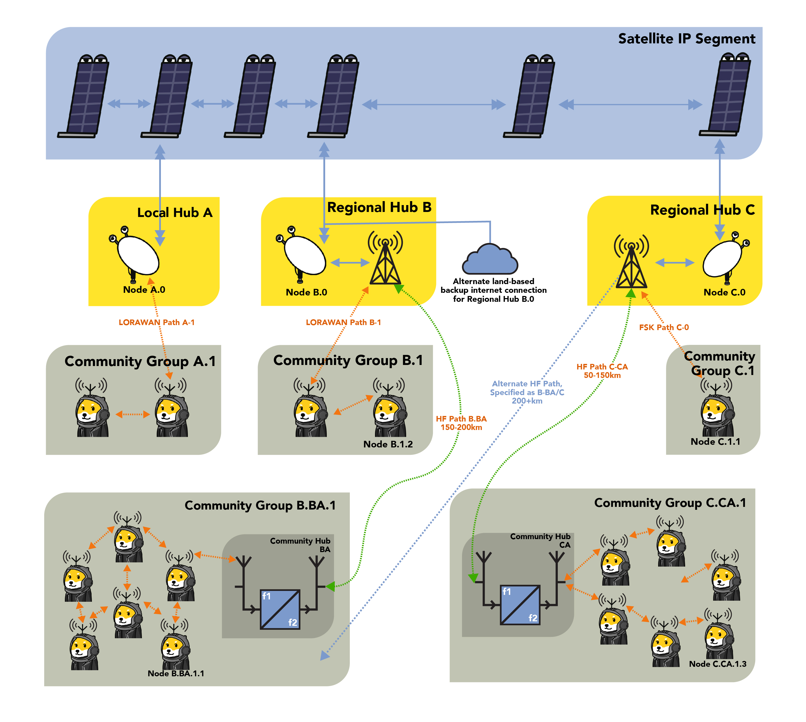
RadioDoge is a decentralized communication and data transmission network that relies on a combination of radio frequency technologies and blockchain.
- Blockchain on the Internet: RadioDoge operates within a blockchain network that can be accessed via the regular internet.
- Main Hubs (A): These are primary network access points, located in various regions such as North America and South America. These hubs have direct internet connectivity, with their main access via services like Starlink, making them resilient to internet outages.
- Backhaul Connections: To reach these main hubs, there is a network of backhaul connections using radio frequency technologies. This includes HF (High Frequency)/shortwave, LoRa (Long Range), or VHF (Very High Frequency) point-to-point links. Backhaul connections ensure that even regions without direct internet access can still connect to the blockchain via the main hubs.
- Regional Hubs (B): These hubs are connected to the main hubs (A) via the backhaul network. They host Simplified Payment Verification (SPV) and data libraries (Lib) and serve as intermediaries for areas without direct internet connectivity. The data is relayed from the main hubs to the regional hubs.
- Local and Short-Range Connectivity: Community hubs and ShibeStation endpoints, which may not have direct internet access, can connect to regional hubs or other hubs using technologies like LoRa, VHF/UHF, WiFi, PSK, and AX.25. These connections use various modulation methods, including LoRa for long-range, low-power links and HF for long-distance, high-power links.
- Data Protocol: Regardless of the method used for the radio transmission (LoRa, HF, FM), the data protocol remains consistent. LoRa and VARA HF are described as "containers" or pipes for the data, with each having its strengths - LoRa for local, low-power links and HF for long-distance, high-power links.
- Addressing: The addressing scheme is hierarchical. Main hubs (A) have addresses like 10.0.1 in North America and 11.0.1 in South America. Regional hubs (B) have addresses like 10.1.1 in North America and 11.1.1 in South America. Community hubs and ShibeStation endpoints have their own addresses based on their location. For example, community hubs in Colorado may have addresses like 10.2.1, while ShibeStation endpoints in Colorado may have addresses like 10.2.58 or 10.1.35.
In summary, RadioDoge is a decentralized communication network that uses blockchain technology and a combination of radio frequency technologies to ensure connectivity in regions with limited or no internet access. It employs a hierarchy of hubs, each with its addressing scheme, to relay data and maintain connectivity even in areas where direct internet access is challenging.
First RadioDoge Transaction
On April 22, 2022, a groundbreaking event occurred in the world of Dogecoin as the first-ever DOGE transaction was successfully transmitted via radio using the innovative "Radio Doge" protocol. This historic milestone was achieved with the assistance of the global Starlink satellite network.
The transaction involved the sending of 4.2069 Dogecoin tokens, originating from BudZ, and covered a remarkable distance of 100 miles. The operation was orchestrated by Dogecoin developer Michi Lumin, who shared the news via X.
Michi Lumin's tweet highlighted the simplicity and effectiveness of the endeavor, which utilized libdogecoin, radio transmission technology, and relied on Starlink for final execution on the Dogecoin blockchain.
Notably, @tjstebbing and @KBluezr, positioned 810 miles away, played a crucial role in listening and witnessing this historic moment. Their involvement underscored the significance of Radio Doge in expanding Dogecoin's accessibility to areas beyond the reach of traditional internet infrastructure.
Sources:
https://x.com/michilumin/status/1517373307275816962
https://x.com/tjstebbing/status/1517374295739039744
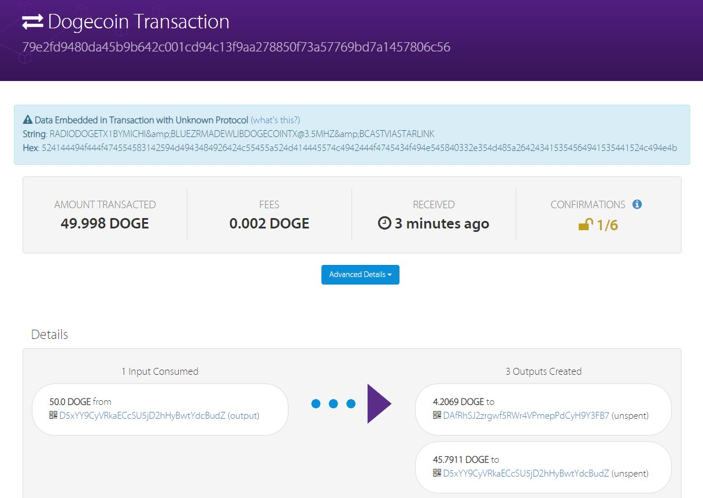
RadioDoge Demo
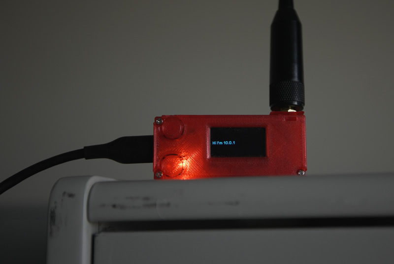
Setting Up the Hub
Using RadioDoge pre-release 10.0.1, we set up the hub on just a Windows PC in a friend's office and put the Hub dongle with a decent antenna, sitting it on a shelf indoors.
Remote Node Setup
We took the Dogecoin Node setup to a park far away, and we just put it on top of an overturned box so it wasn't in the grass.
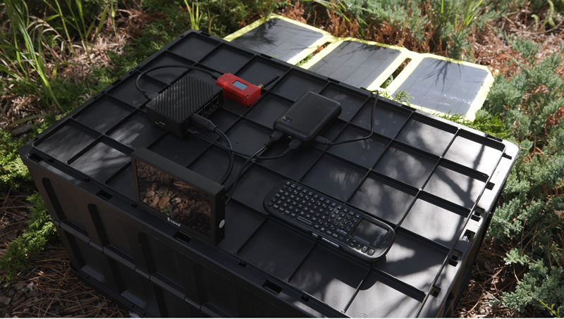
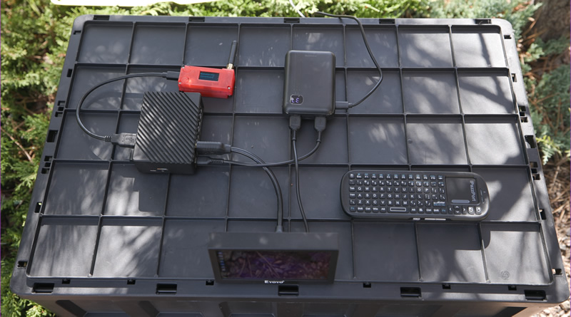
Solar Power
Solar panel powering the whole setup (there's a USB PD battery pack there too that gets charged by the solar panel.), running all disconnected now.
System Initialization
Starting up RadioDoge. It runs a few tests just to make sure everything (LibDogecoin, LoRa, Radio etc) are working.
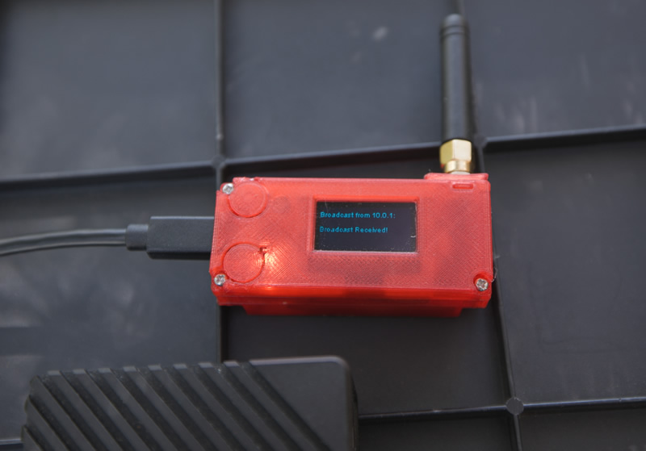
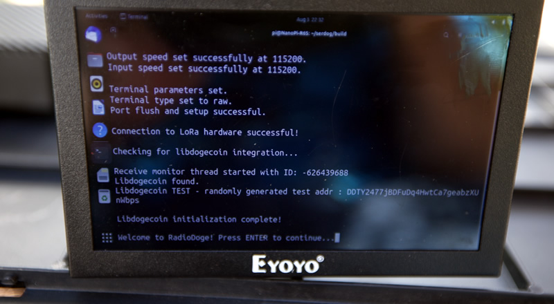
Hub Discovery
So then we hit enter, and wait at the menu, until we see a hub. This is what people would do in an area, RadioDoge will just show which hubs are beaconing in range. Here, a hub broadcast from the hub we had set up in the office, is received, and it shows on the OLED of the LoRa dongle.
Hub Address Display
And it shows up on the terminal too. Now we know that there's an active hub in the area at Address 10.0.1.
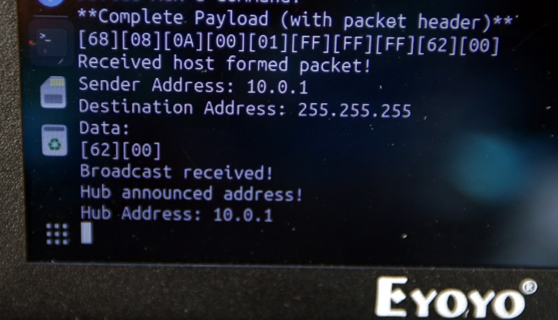
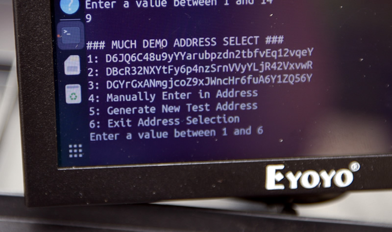
Selecting Source Address
Just to make life easier there's an 'address book', (this is just the 'demo addressbook') - but we're choosing the source address (and wallet). So for this demo we just pick addressbook entry #3, "DGYr..." as the source address. (anyone can just enter one but it needs to enter in a private key as well to make it a source. In this case, the pub/priv keypair is saved in an encrypted and password protected file on the node. Since the node, using LibDogecoin, forms the transactions completely - the hub does NOT need to ever see the private key.)
Selecting Destination Address
Then we pick a destination address. Also from the addressbook but also can take direct entry. (Or QR code, etc. No private key needed for the destination address.)
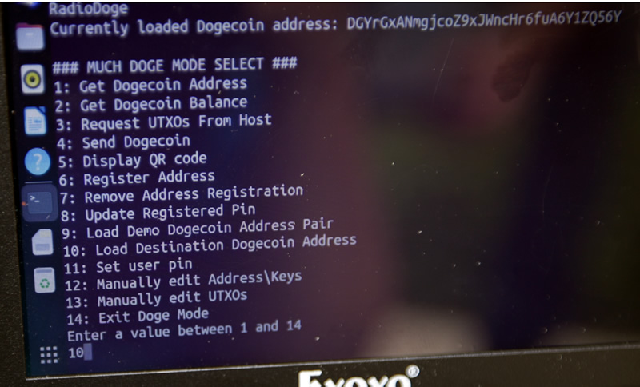
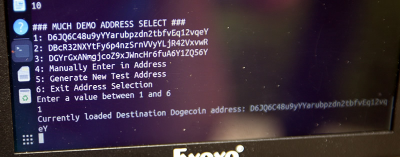
Destination Selected
Picking Addressbook entry #1, "D6JQ...." as the receiver. (of course again it can be any address)
Registering with Hub
Registering a source address/wallet with the hub. It's transmitted encrypted, over the air, but the registration just allows you to check your balance live; which the hub updates and sends to you. It's encrypted with a PIN, but all this does or needs to do is make sure other people can't read your balance, since some people don't like that. Still zero possibility of fund movement or malleability. Just for privacy-of-balance.
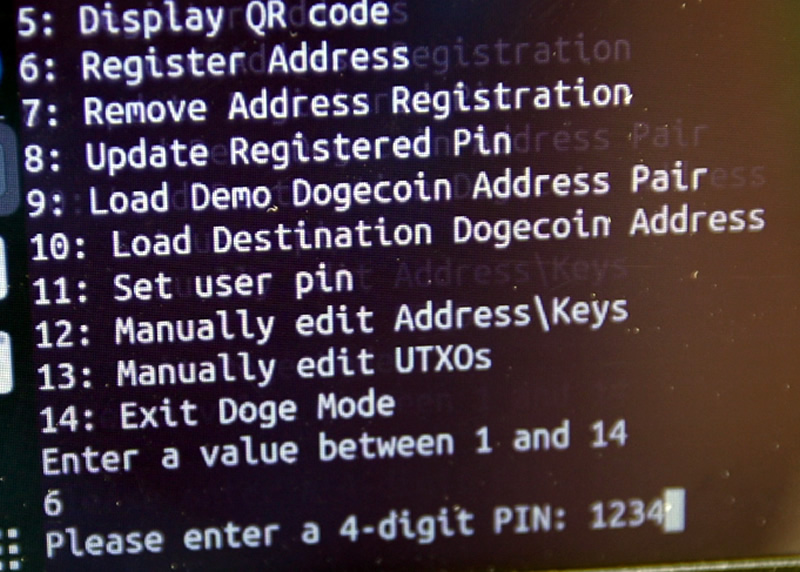
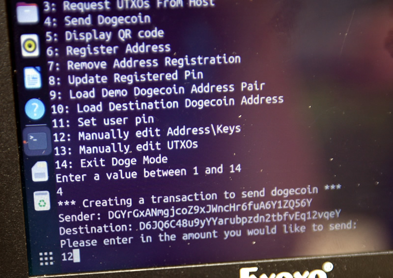
Ready to Send
If you decide to move to another hub, too, you can unregister and the hub deletes all records of your addresses and balances. Which are encrypted-at-rest anyways.
So we've registered our node and a watch /source/balance address (which we have the keys to on our little pi box) - on the hub. (Just another reminder that the hub does NOT have the private key and it NEVER gets transmitted over the air, even encrypted.) And we've picked a destination address that we want to send to. So now we can pick #4, send dogecoin.
Sending Transaction
We now will send 12 dogecoin and it reverifies the from-and-to addresses that you're working with.
We hit enter and it creates the transaction and sends it. Showing the raw transaction here that's about to be sent. It's split into 3 burst packets (which have forward error correction - they're all or nothing; in other words, the message cannot get 'mangled', it either has correctable erasures or it's no go.) Hub sends an ACK as well that it received it
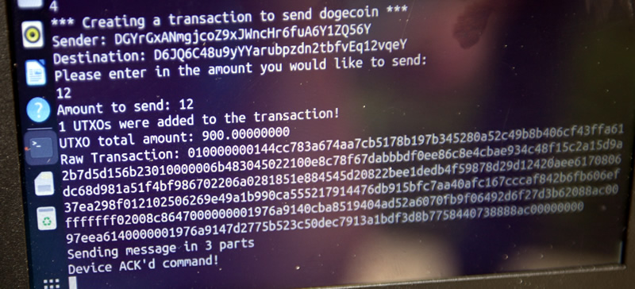
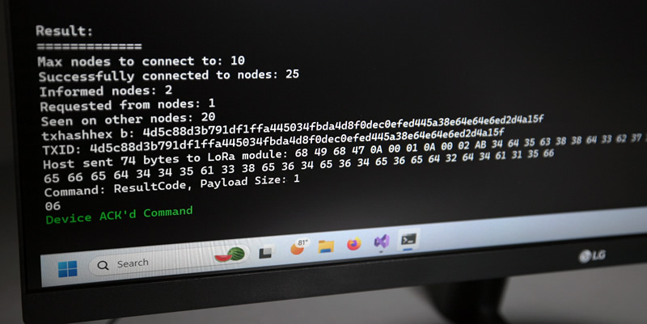
Hub Processing
Back at the Office: on the Windows PC (the hub), running LibDogecoin's SPV node, transmits the transaction to the Blockchain and gathers some data on where it's seen, to verify that it went through. It then sends a response:
Note: the hub can be connected directly to the internet OR it can use the HF Long Haul to forward the message to another hub that has access, if it has none. That was the experiment we did last year. It works similarly to the node to hub transaction send, just over an HF/shortwave link. We did not have a distant HF/shortwave setup here because we'd kinda have to fly somewhere to do it, but thats in the plans. to set some up permanently (the tower, and another remote/distant location).
Transaction Confirmation
Back at the portable/remote node: here we see a message from 10.0.1 (the hub) to the remote node (10.0.2); giving confirmation and the TXID. (of course the hex data could be hidden, we just have it there for debug) - but this also shows that the system can be used to send general purpose messages between nodes. But, this is basically the 'receipt' with the TXID that the doge has been sent.
Don't trust, verify!
4d5c88d3b791df1ffa445034fbda4d8f0dec0efed445a38e64e64e6ed2d4a15f
The Dogecoin address DGYr.. sends 12 Doge to D6JQ... Dogecoin address from its balance of 900 Doge*.
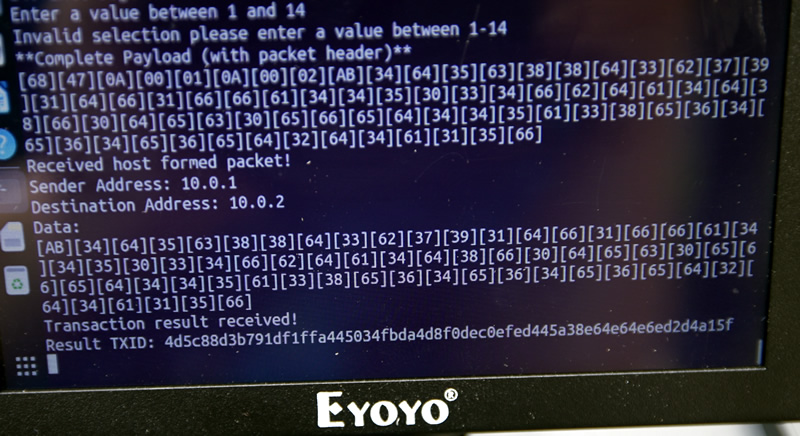
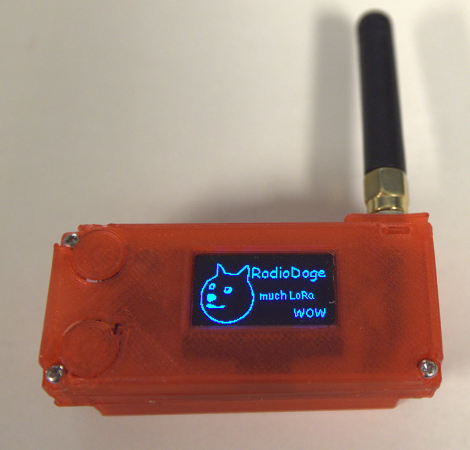
Summary
This demonstration shows the complete RadioDoge transaction flow from node setup to transaction confirmation, all without requiring traditional internet infrastructure.
RadioDoge Interactive Map
Status
RadioDoge is a fully working prototype leveraging LoRA, VaraHF radio and the Starlink network. We are looking for partners or even regular shibes in remote areas who would be interested in establishing regional hubs, and working with local communities to demonstrate and develop the technology for their needs.
We are looking to collaborate with NGOs, Governments or anyone who sees the potential for equipping farmers, teachers, tradespeople in remote or under facilitated areas with financial tools to engage with the top of the supply chains and not be exploited by greedy middlemen.
Please contact Michi Lumin via the forum: forum.dogecoin.org if you want to get involved.